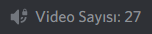

Youtube İstatistik Sistemi
İstatistik sisteminde belirlediğiniz bir youtube kanalının abone, izlenme ve video sayısı verilerini gösterebilirsiniz.
Bu sistemi kurmak için belirlediğiniz youtube kanalının idsini almanız gerekmektedir.
Kanal verileri saatte bir defa güncellenir.
İstatistik sisteminde belirlediğiniz bir youtube kanalının abone sayısını göstermek isterseniz.
Kullanım: m!istatistikkur <isim> ytabone:<youtubeid>
Kullanım: m!istatistikkur Abone Sayısı: ytabone:UC2xKEdziHlLfcZEM55mi1Iw
İstatistik sisteminde belirlediğiniz bir youtube kanalının izlenme sayısını göstermek isterseniz.
Kullanım: m!istatistikkur <isim> ytizlenme:<youtubeid>
Kullanım: m!istatistikkur İzlenme: ytizlenme:UC2xKEdziHlLfcZEM55mi1Iw
İstatistik sisteminde belirlediğiniz bir youtube kanalının video sayısını göstermek isterseniz.
Kullanım: m!istatistikkur <isim> ytvideosayı:<youtubeid>
Kullanım: m!istatistikkur Video Sayısı: ytvideosayı:UC2xKEdziHlLfcZEM55mi1Iw
